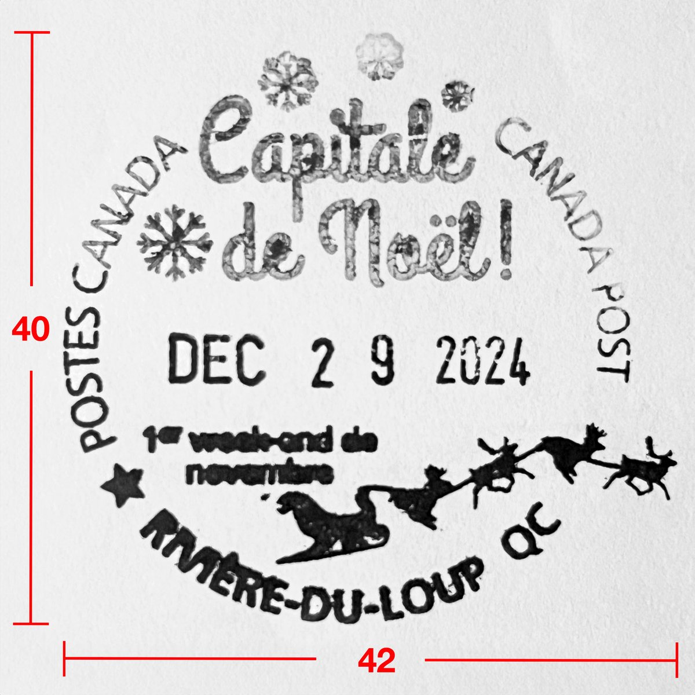

Rivière-du-Loup Bureau-Chef pictorial cancel
Capital de Noël! 1er week-end de novembre
- Status
- Expired
- Run dates
- 2014-01-01 to 2025-12-31
- Design
- "Capital de Noël! 1er week-end de novembre"; reindeer, sleigh, snowflakes, star
- Ink colour
- Black
- Designer
- Unknown
- Post office
- Rivière-du-Loup Bureau-Chef
200 Rue Lafontaine
Rivière-du-Loup, QC
G5R 3A7 - Subjects
- animal, mammal, Christmas, Santa, sled, snowflake, star
This cancel is retired, so the post office can no longer apply it. Covers with it turn up from dealers and other collectors.
 BP St-PamphileMoose
BP St-PamphileMoose Montmagny Succ Bureau-ChefAccordion
Montmagny Succ Bureau-ChefAccordion